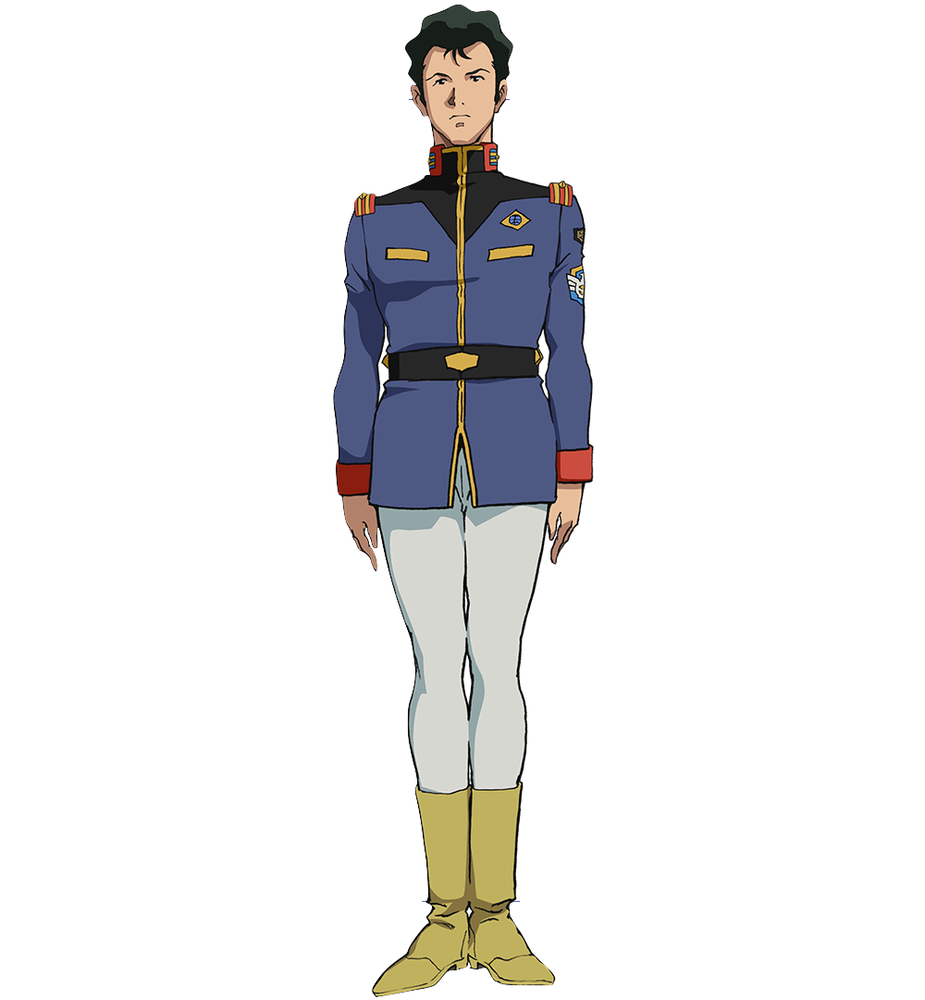

Bright Noah
Information
Story
Age : 19 (at first appearance)
gender : male
Height : 175cm
Nationality : Earth Federation
Birthday : 60/May/18th
Favorite food : Hamburger
Hobby : Make
Personality : Serious
Bright Noah is the captain of the White Base in the Gundam series. He starts off as an inexperienced leader but grows to become a skilled and respected mentor to younger characters in later Gundam series.
